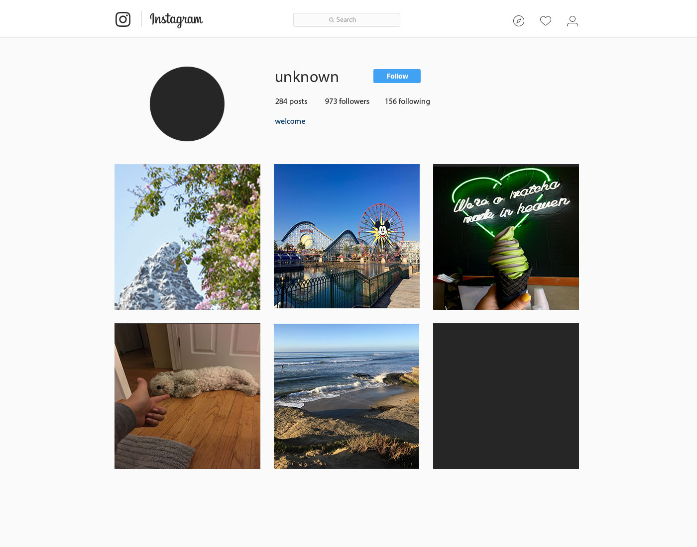

This piece is a composite image that has three layers: the "winter" lettering, snow, and winter background. It creates a sense of unity through a specific meaning.

This piece was broken down to create a sense of light in chaos. The first photo was the original and the second was the broken down image through how we can create a glitch to produce another work of art.
This piece was inspired by how much we tend to look at the internet and think about the content that we look at, but don't think too deeply about what it can do to our devices and ourselves. I immitated an instagram page that you can click on, in which the experience allows you to uncover more as you explore the page.